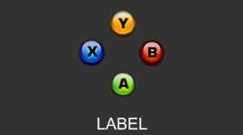

UDN
Search public documentation:
ScaleformCH
English Translation
日本語訳
한국어
Interested in the Unreal Engine?
Visit the Unreal Technology site.
Looking for jobs and company info?
Check out the Epic games site.
Questions about support via UDN?
Contact the UDN Staff
日本語訳
한국어
Interested in the Unreal Engine?
Visit the Unreal Technology site.
Looking for jobs and company info?
Check out the Epic games site.
Questions about support via UDN?
Contact the UDN Staff
UE3 主页 > 用户界面 & HUD > Scaleform GFx
Scaleform GFx

-
 有关在虚幻引擎 3 中使用 Scaleform GFx 开始用户界面和 HUD 创建的信息。设置 Flash，Scaleform - Basic Scene Quick Start（基础场景快速入门） - Workflow Tips（工作流程建议） - Terminology（术语）
有关在虚幻引擎 3 中使用 Scaleform GFx 开始用户界面和 HUD 创建的信息。设置 Flash，Scaleform - Basic Scene Quick Start（基础场景快速入门） - Workflow Tips（工作流程建议） - Terminology（术语）
- 安装 Scaleform GFx - 在 Adobe Flash 专业版中为虚幻引擎 3 安装 Scaleform
- Scaleform 快速入门 - 为虚幻引擎 3 创建一个基础的 Scaleform UI。
- Scaleform 工作流程 - 有关为虚幻引擎 3 创建 Scaleform 的工作流程建议。
- Scaleform 术语 - Scaleform 和 Flash 的常用术语和概念。
- Scaleform 技术指南 - 在虚幻引擎 3 中通过代码使用和控制 Scaleform 的指南。
- Scaleform ActionScript 最佳实践 - 有关使用 Scaleform 编写 ActionScript 的指南。
- Scaleform 内容指南 - 创建并安装 Scaleform 以在虚幻引擎 3 中使用的指南。
- Scaleform GFx 导入通道 - 有关将 Scaleform UI 的 Flash 场景和内容导入到 UE3 中的指南。
- Scaleform GFx 内容最佳实践 - 有关如何使用 Scaleform 和 UE3 优化内容的建议和技巧。
- 构建 UDK Scaleform UI - 有关构建和导入 UDK UI 及 HUD 的介绍。
- 如何添加带有状态栏的控制体积 - 讨论如何添加其中包含玩家具有可以表现控制的状态栏的体积的教程。
- 如何使用渲染目标 - 讨论如何在 Scaleform 中使用渲染目标的教程。
- 如何处理分屏 - 有关如何处理分屏的简要概述。
- 怎样将一个外部接口调用连接到 kismet - 简要描述了如何将一个外部接口调用连接到 Kismet。
- 如何通过一个外部 SWF 访问变量 - 一个有关如何通过一个外部 SWF 访问 Unrealscript 中的变量的示例。
- 如何在 Actionscript 内部访问 Unrealscript 变量 - 一个有关如何通过 ActionScript 访问 Unrealscript 变量的示例。
- 如何将一个对象的数组传输到 ActionScript - 一个有关如何将一个对象数组从 Unrealscript 传递到 ActionScript 中的实例。
- 怎样从 ActionScript 调用中获得返回值 - 一个有关如何从 ActionScript 调用中获得返回值的示例。
- 怎样在触碰到触发器时在 HUD 上显示内容 - 一个有关在触碰到一个触发事件的时候如何在 HUD 上显示内容的示例。
- 如何在 Kismet 中捕获键盘输入 - 一个有关如何在 Kismet 中捕获键盘输入而不需要使用 Unrealscript 的示例。
- 如何在 Scaleform 中捕获 XBox360 输入 - 一个有关如何在 Scaleform 中捕获 XBox 360 输入的示例。
- 了解 GFx UDK Front End - 一步步详细说明了 GFxUDKFrontEnd 的工作原理。
- SetViewScaleMode、SetAlignment 和 SetViewport 指南 - 有关它们是什么以及您应该如何使用它们的详细说明。
- bCaptureInput、AddCaptureKey 和 AddFocusIgnoreKey 指南 - 有关它们是什么以及您应该如何使用它们的详细说明。
- 如何创建一个鼠标光标 - 一个有关如何在 HUD 上创建一个鼠标光标的示例。
- 创建鼠标接口 - 如何使用 Scaleform 创建鼠标接口。
- 如何获得并设置一个复选框值 - 有关如何获得并设置一个复选框值的示例。
- 如何通过一个ini文件填充一个列表 - 有关如何通过一个ini文件填充一个列表的示例。
- 怎样创建一个多列列表 - 有关如何创建一个多列列表的示例。
- 在标签视图下存储并检索选项 - 有关如何在标签视图中存储并检索选项的示例。
- 如何创建一个简单的聊天框 - 有关如何创建一个通过鼠标和键盘控制的简单聊天框的示例。
- 如何在 ActionScript 或 UnrealScript 中创建补间动画 - 有关如何在 ActionScript 或 Unrealscript 中创建补间动画的示例。
- 如何在滚动列表中显示图标 - 有关如何创建一个其中选项条目具有图标的滚动列表的示例。
- Scaleform UDK 文档资料 - 官方 Scaleform 4.0 UDK 文档资料。
- 导入 SWF - 这个视频讨论的是创建 Flash 内容并将其导入到 UDK 中的一些重要规则。
- 渲染贴图 & 材质 - 这个视频讨论的是中创建对于将交互 Flash 内容显示在 UDK 关卡中的 BSP 表面上所必需的渲染贴图和材质。
- 将 SWF 添加到 BSP 对象 - 在这个视频中，我们谈到了将一个 Flash 文件添加到一个 BSP 表面上所需要进行的步骤，其中包括必需的 Kismet 工作流程。
- 捕获输入 - 在这个视频中，我们说明了如何使用 GFx 捕获按键 kismet 节点将键盘和游戏控制器输入传输到 Flash 文件中。这样它会解释说明这个输入，然后使您可以旋转 3D 中的视频剪辑。
- 使用 Invoke ActionScript & FSCommands - 在这个视频中，我们谈到了 Invoke ActionsCript 在 Kismet 中的使用，它允许您通过 UDK 调用 Flash 文件中的 ActionScript 函数。我们还将谈到通过 FS Commands 将一个命令从这个 Flash 文件中发送返回到 UDK。
- 创建自定义菜单 - 在第六个 UDK 视频教程中，我们将会向您说明如何使用 Scaleform GFx 和 UnrealScript 创建一个自定义菜单系统的基础内容。
- 使用 Scaleform 3Di Flash AS2 Extensions 创建 3D UI - 这个视频将会说明如何在 Scaleform GFx 3.2 及更高版本中使用我们的新 3Di ActionScript 2 插件平移和旋转 3D 空间中的视频剪辑。
- 处理字体 - 在第七个 UDK 视频教程中，我们将会向您说明在 Flash 及 2010 年 9 月 UDK 版本中正确使用字体需要了解的所有内容。
- 掌握 Scaleform HUD
- HUD 概述 - 这是由四部分组成的系列中的第一部分，它将会带您浏览 2010 年 9 月 UDK Scaleform HUD 中的所有文件和资源。
- UTGFxHudWrapper.uc - 这是说明 2010 年 9 月 UDK Scaleform HUD 是如何组成的第二个视频。在这个视频中，我们全面介绍了 UTGFxHudWrapper.uc 类的基础构成，同时我们花了一段时间详细说明了如何打开和关闭暂停菜单作为 HUD 的一部分。
- GFxMinimapHud.uc - 第 1 部分 - 这是说明 2010 年 9 月 UDK Scaleform HUD 是如何组成的第三个视频。在这个视频，我大致介绍了 GFxMinimapHud 类的前半部分内容以及 udk_hud Flash 文件。
- GFxMinimapHud.uc - 第 2 部分 - 这是说明 2010 年 9 月 UDK Scaleform HUD 是如何组成的第四个视频。在这个视频中，我对 GFxMinimapHud 类的后半部分内容进行了说明。
- CLIK 入门指南
- 初始设置 - 在这个教程中，我们将会向您说明如何使用这个新的组件精简接口工具包或 CLIK 快速设计基础前端菜单系统，它将会包含一个主菜单和一个选项画面，全部由核心 CLIK 组件组成，例如按钮、滑块、选项步进以及单选按钮。
- 主菜单设置 - 在第二个步骤中，我们将会向主菜单中添加一些基本功能。
- 创建选项画面 - 在第三步骤中，我们会让主菜单上的按钮可以将用户带入到选项画面，我们也会添加一个与我们的第一个选项相同的难度设置选项步长。
- 复选框、单选按钮 & 滑块 - 在第四个步骤中，我们会添加一些新的组件，其中包括视频设置复选框、单选按钮以及音量滑块。
- 添加功能 - 在第五个步骤中，我们会添加 ok（确定）和 cancel（取消）按钮，同时会对难度设置选项步长和单选按钮添加一些功能。
- 保留更改 - 在第六个步骤中，我们会设置选项画面，这样它才会在按下 OK 按钮后保留用户所进行的任何更改。
- 添加背景 - 在这个教程中，我们会向您说明如何为那些组成我们在教程 1-6 中创建的菜单的组件更换皮肤。我们会将这个过程划分为八个步骤。在步骤中，我们会向这个菜单添加一个背景图片。
- 导入背景 - 在这个步骤中，我们会导入在 Adobe Photoshop 中创建的图片作为我们的选项画面的窗口使用。我们还会调整组件使它们与窗口相适应，然后复制一个组件，这样我们就有它的两个不同皮肤的版本了。
- 为主菜单按钮更换皮肤 - 在这个步骤中，我们将会为主菜单按钮更换皮肤。
- 为 OK 和 Cancel 按钮更换皮肤 - 在步骤 10 中，我们将会为 ok 和 cancel 按钮更换皮肤。
- 为声音滑块更换皮肤 - 步骤 11 将会涉及为声音滑块更换皮肤。
- 为复选框更换皮肤 - 我们将会在步骤 12 中为复选框更换皮肤。
- 为单选按钮更换皮肤 - 我们将会在这个步骤中为视频设置单选按钮更换皮肤。
- 为选项步长更换皮肤 - CLIK 入门指南中的最后一个步骤将会涉及未难度选项步长更换皮肤。
- Scaleform 用户界面设计 - 在 MIGS 2011 举行的虚幻学院上 Matt Doyle 进行现场演示。
Scaleform GFx 集成
- 具有3Di渲染功能的GFx运行时播放器(目前支持Flash 8，不久将会出现 Flash 10)。
- CLIK Flash UI架构
- 支持亚洲语言聊天的Scaleform IME。
- 性能及内存的AMP分析器。
- 游戏UI样本 - HUD、菜单、3d武器和加载屏幕页面。
- 文档、视频及演示。
- Scaleform Video 没有内置在 UE3 / UDK 中。但是对于那些需要集成Flash Video支持的UE3授权用户（具有访问源代码的权限）可以获得该功能。对Scaleform Video感兴趣的授权用户，请直接联系 Scaleform 销售人员。注意： UDK用户不能获得并使用Scaleform Video，因为UDK是一个预编译的二进制运行时系统。
- 内容创建工具。 您需要一些创建Adobe Flash兼容的内容的方法。 Scaleform对使用Adobe Flash工具集创建的内容提供了官方的支持，该工具集是Adobe Creative Suite的一部分。 可替换的工具，比如Sothink SWF Quicker也可以使用，但是Scaleform不对其提供官方支持。
支持
- 访问 Scaleform 开发网站 - 最新的Scaleform 、样例及视频。
- Scaleform高级工程师的直接的邮件及电话支持。
- 由Scaleform的高级程序员及其它商业游戏开发人员管理和解答问题的私有论坛。
UDK UI文件示例
使用 CLIK 按钮和标签的基础场景
请参阅 \UnrealEngine3\UDKGame\Flash\example\udk_GFxCLIKBasicScene.fla。 这是通过本文档前面的示例创建的文件。包含了两个CLIK按钮，并且通过点击按钮可以驱动一个单独的标签的文本。它是一个设置按钮来对 点击/按下 事件作出反应并执行函数的示例。
这是通过本文档前面的示例创建的文件。包含了两个CLIK按钮，并且通过点击按钮可以驱动一个单独的标签的文本。它是一个设置按钮来对 点击/按下 事件作出反应并执行函数的示例。
控制器按钮输入样例
请参阅 \UnrealEngine3\UDKGame\Flash\example\udk_GFxControllerButtonInput_Sample.fla
这个文件说明了手柄输入的应用，并设置通过押下控制器按钮来驱动您的UI中的函数和动作。为了是它正常工作，由于XBox 360控制器按钮图形不是一个实际可选择的按钮(和UI中的按钮条中的按钮类似)，所以为不可见对不可见的按钮 添加及赋予 聚焦。要想调用控制器按钮按下时，使用以下名称：- GAMEPAD_A
- GAMEPAD_B
- GAMEPAD_X
- GAMEPAD_Y
- GAMEPAD_R1
- GAMEPAD_R2
- GAMEPAD_R3
- GAMEPAD_L1
- GAMEPAD_L2
- GAMEPAD_L3
- GAMEPAD_START
- GAMEPAD_BACK
下载样例
| May QA 发布版本 | part 1 part 2 part 3 part 4 part 5 part 6 part 7 part 8 |
| 6月份QA发布版本 | part 1 part 2 part 3 part 4 part 5 part 6 part 7 part 8 |
| 7月份QA发布版本 | part 1 part 2 part 3 part 4 part 5 part 6 part 7 part 8 |
| 8月份QA发布版本 | part 1 part 2 part 3 part 4 part 5 part 6 part 7 part 8 part 9 part 10 part 11 |
| 10月份QA发布版本 | part 1 part 2 |
| 11月份QA发布版本 | part 1 part 2 part 3 part 4 part 5 part 6 |
| 12月份QA发布版本 | part 1 part 2 |
| 2011年1月份QA发布版本 | part 1 part 2 |
| 2011年2月份QA发布版本 | part 1 part 2 |
| 2011年3月份QA发布版本 | part 1 part 2 |
| 2011年4月份QA发布版本 | part 1 part 2 |
| 2011年5月份QA发布版本 | part 1 part 2 |
| 2011年6月份QA发布版本 | part 1 part 2 |
| 2011年7月份QA发布版本 | part 1 part 2 |
| 2011年8月份QA发布版本 | part 1 part 2 |
| 2011年9月份QA发布版本 | part 1 part 2 |
| 2011年10月份QA发布版本 | part 1 part 2 |
| 2011年11月份QA发布版本 | part 1 part 2 |
| 2011年12月份QA发布版本 | part 1 part 2 |
| 2012年1月份QA发布版本 | part 1 part 2 part 3 part 4 |